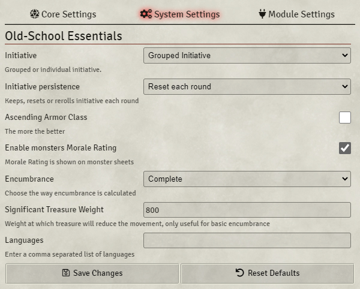
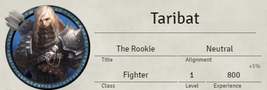
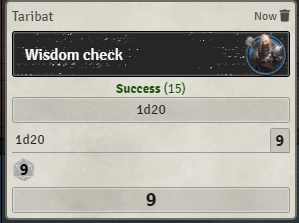
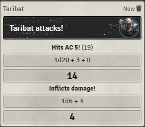
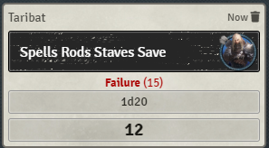
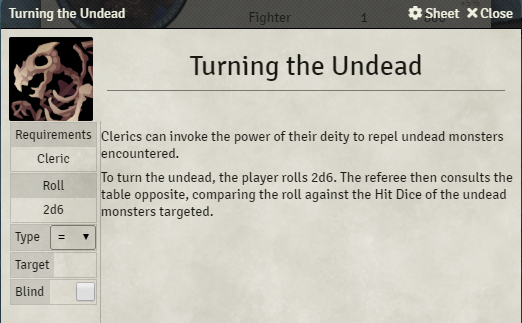
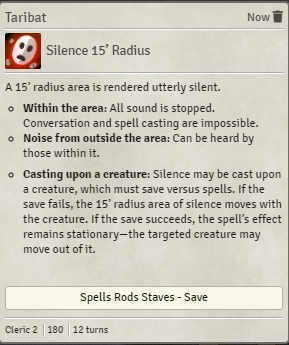
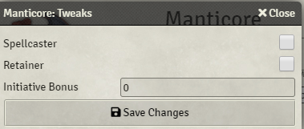
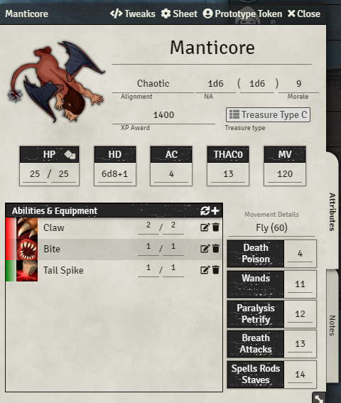

This Foundry VTT game system has all the features you need to play Old-School Essentials.
This comprehensive user guide will show you the basics and explain all the features of the game system.
For further documentation on how to use Foundry VTT please go to Foundry VTT Knowledge base.
Please see the project readme for a list of places to receive Old-School Essentials - Foundry VTT Edition support.
Installation
You'll need a Foundry VTT License or GM access to a Foundry VTT server.
- Launch Foundry VTT.
- Go to Game Systems, Install System.
- Search for 'Old-School Essentials' or 'ose' and click the Install button.
- Optionally install the free, community-created Classic Fantasy Compendium or the Advanced Fantasy premium content module. You do not need both (or either).
- Create a new game world, selecting Old-School Essentials from the game system dropdown menu.
Setup
You can find game system settings by navigating to the Settings Directory (the gears icon), clicking the Configure Settings button, and clicking Old-School Essentials in the dialog box.

These are several settings to customize your experience with Old School Essentials.
- Initiative
Group initiative: every combatant in the same group will have the same initiative roll result (but their final initiative may be modified by abilities).
Individual initiative: every combatant will have its own initiative roll. Characters will show an initiative modifier on their character sheets, see the Attributes section. - Initiative persistence:
Keep each round: initiative is automatically rolled at the beginning of each combat, and the number does not change between rounds.
Reset each round: initiative result is removed at the beginning of each round and not automatically re-rolled. Players will have to click to roll new initiative.
Reroll each round: initiative is automatically rolled at the beginning of each round. - Ascending Armor Class: By default, Old-School Essentials uses the original descending Armor Class and the 'To Hit Armour Class 0' attack statistic, also known as THAC0. When checked, this setting will use the optional rules for AAC and AB (attack bonus) given in Old-School Essentials.
- Monster Morale: This enables the optional rule for Monster Morale from Old-School Essentials. Record and roll a Morale check to see whether a monster decides to flee under perilous conditions.
- Encumbrance: The weight of items a character carries may
modify their movement rate. The modified movement rate for each encumbrance threshold
is documented in the Old-School Essential rules.
- Disabled: You can disable the effect of weight and armor on movement.
- Basic: Movement is calculated from the armour type and whether you are carrying more than "significant" treasure.
- Detailed: If the character carries any "adventuring gear," 80 coins of weight will be added to the character's total encumbrance. The weight of other equipment is counted individually.
- Complete: Each and every item, including adventuring gear, will count towards a character's encumbrance.
- Item-based: Items are generally counted as one unit of weight, but two-handed items are counted as two units, and small items are not encumbering. Refer to Carcass Crawler Issue Two.
- Significant treasure weight: If you have the Basic encumbrance option enabled, the movement rate will depend on a predefined weight at which you consider the treasure to be cumbersome. You can set the value here and it will be used to determine the movement rates of characters.
- Languages: Characters and monsters can select languages they speak from a list given here. Classic Fantasy compendium languages are already included by default.
-
Token Damage Target: Chat cards will ask the user whether
they're successful attack will deal damage. This setting affects which type
of targeting system they'd like to use.
- Selected: The selected token receives the damage.
- Target: The currently targeted token receives the damage (even if it wasn't the target when the attack was rolled).
- Original Target: The token that was targeted when the attack was rolled receives the damage (even if a different token is targeted when the damage button is pushed).
- Invert Ctrl/Meta Key behavior: Many of the game system's automated dice rolls will show a dialog box to input modifiers to the dice roll by default, but this dialog box can be skipped by holding Ctrl (on Windows) or Meta (on Mac). Checking this box will make the dialog boxes skip automatically, but show when the Ctrl/Meta key is held down.
Actors
Tweaks
You can customize characters and monsters through this menu by clicking the Tweaks button in the header of the character sheet.
- Spellcaster: Shows the Magic tab (even if the Actor doesn't have any spells).
- Retainer: Adds the Loyalty rating and Wage attributes to a character, removes the Title and Next Level XP attributes.
- Don't apply weapon bonus to damage roll: A weapon's bonus (e.g. +1, +2) will only augment the attack of the weapon. You may use this to write your damage bonus in the damage input box instead.
- Initiative Bonus: Will add this value to initiative in addition to the Dexterity modifier.
- Next Level: The threshold at which the level field in the header section of the character sheet will glow to notify players that the character may level up.
- Bonus experience: The percentage of XP to add to the experience gained while using the Party Sheet XP tool.
- Experience share: The share of the party XP you will get from the experience dealt (e.g. 50% for Retainers).
- Melee Bonus: A bonus to the Attack roll only for melee weapons, in addition to other modifiers.
- Missile Bonus: A bonus to the Attack roll only for missile weapons, in addition to other modifiers.
- Armor Class: This value will be added (ascending) or subtracted (default) to the Armor class value, in addition to any other modifiers.
- Encumbrance: (GM Only) The maximum value at which you can't move anymore. This will affect every encumbrance threshold used for the current encumbrance scheme. For example, if this value is 1800, "half-encumbered" will now be 900 instead of the default 800.
- Calculate movement: (GM Only) uncheck this box to manually set movement rates for this character.
Header

The Character sheet header contains text fields you can edit directly. There is no automation done with the header fields.
The greyed text on top of the experience field is the XP prime requisites bonus that can be set in the Tweaks dialog box. It is used when experience is dealt automatically via the party sheet.
If the character survives long enough, the Level field will glow as soon when the character has enough experience to level up. This experience threshold is also set in the Tweaks dialog box.
Combat
The Default tab is dedicated to the combat statistics of the actor.

Ability Scores
The left side of this view is dedicated to the ability scores. You can edit these values directly, but they can also be automatically generated using the character generator dialog box.
Ability rolls can be made by clicking on the attribute name. After clicking you will see a dialog where you can input modifiers. If you try to roll the attributes will holding the CTRL key, the dialog will be skipped.

By hovering your cursor over the character portrait, you can click on the book icon to see the influence of each ability score on the other stats of your character. That will be useful during character creation, but also to see other stats like your maximum number of retainers, or literacy.
Resources and secondary attributes
The center of this view is dedicated to resources and secondary attributes.
THAC0 or Attack Bonus (AB) will show inside a morningstar weapon, depending on whether the Ascending Armour Class optional rule is enabled.
Hit points current and max values will show inside the winged heart.
Armour Class (normal or ascending) will appear inside the shield. If there is a small shield icon on top of the Armor class value, it means you have a shield equipped that should not be taken into account when you are attacked from behind.
On the second row are the Melee, ranged, and initiative modifiers for the character.
The third row details the movement rates for different situations, i.e. Encounter movement per round, Exploration movement per dungeon turn, and Overland movement per day. These are automatically set based on your encumbrance setting and weight.

Saving Throws
On the right side of this view, the saving throws for the character may be recorded. Complete names and abbreviations for each can be seen on hover. This can be rolled when the save name is clicked, and can be speedrolled with Ctrl/Meta as well.

The bonus versus magic is applied by clicking the Vs Magic button in the dialog box when a save is clicked. This means saves vs magic cannot be "speedrolled."
Skills and Abilities

The top row contains rollable entries for exploration rolls. These can be speed rolled with Ctrl/Meta.
In the abilities section you can create anything that needs a description. It can be thieves' skills, class abilities, and so on. You can create a new ability by clicking the plus button or by dragging one from the item sidebar or a compendium. You can open the abilities with the pen icon, show it in the chat with the eye icon, and delete it with the trash icon.
You can also drag skills onto the character sheet from a compendium.

When opened, the ability details can be entered. On the left you can set the ability requirements, for example `Thief, 1`, and you can enter a roll associated with the ability. For example if Roll is `1d100`, roll type is `>=` and target is `40`. The roll will display success in green as if the result is above 40. When the ability has a roll set you can click on the ability image on the character sheet to roll directly to the chat. You can apply the roll result as damage or as healing by right clicking on the chat card, this is true for all rolls.

If you need someone else to roll an ability you can show the whole ability to the chat with the eye icon and they can roll from there. They can also roll a save for that ability. Note that you can slide down the ability description by clicking on its name from the character sheet.
Spells

You won't have this tab displayed by default. You must enable the `spellcaster` checkbox in the Tweaks dialog located in the sheet toolbar, or drag a magic item into the character sheet.
Here you can record your spellbook contents, or your deity's available spells. First you can add a new spell by clicking the plus. For each level of spell you have, you will have a new section for its level with it's related spell slot counter.
At the beginning I recommend creating one New Spell for each spell level you have and then change their level by opening them, which unlocks the spell slot counters for each level.
Spell slot counters have two values. The first one is the number of spells you have memorized, which can't be edited. The second is the total number of spell slots you have. Edit this value as the character levels up.
Spells themselves have counters. The first is the remaining available spells, the second is the number of this spell you memorized. The spell counter decreases as you roll them by clicking their image. Used spell slots can be refreshed by clicking the reset icon in the spells tab header.

Spells are similar to abilities but have a few more info. Rolls can't be configured as much, you can only set a roll string. However you can still specify a Save so when the Spell is displayed on chat with the eye icon, a button that triggers a save roll from the selected actors is displayed below the spell description.

Inventory

The inventory compiles every item you own, from weapons to treasure. Weapons are in the first section. Clicking on the weapon icon will roll an attack with damage.

Damage rolled during the attack can be applied to one or several selected tokens if you click on the blood drop icon right to the result. You can apply damage or healing by right clicking on the chat card, which is true for all rolls. Damage will be applied according to the damage application setting in Configure Settings.
Clicking on the name will expand the item description along with relevant tags, including damage.

It is possible to equip an item. Equipped slow weapons will make the character last in the initiative order. Some special tags are displayed as icons in the inventory.
When you open the weapon sheet by clicking on the pen icon, you can edit the stats and add new tags. The Melee and Missile icons, when clicked, will make the weapon use your character's melee or missile modifiers. If both are active, the system will prompt the userwhether the weapon is being held or thrown when attacking.

You can add new weapon tags if you type text in the field below the weapon icon and press ENTER. If you enter more than one, the input parser will split tags using commas. Text entered between brackets will be visible when hovered by the cursor.
Armour has a configurable Armour Class and an Armour type, Misc items can have a quantity directly editable from the inventory list. If checked as Treasure, it is displayed under the treasure header instead and will usually count against one's encumbrance.
At the bottom of the inventory view is the encumbrance bar. Weight, visualized here as a percentage with thresholds and a maximum, is used for automatic mouvement calculation. Your encumbrance max value is 1600 by default, and at each threshold shown, the character's movement will degrade.
Notes

This tab is a free space you can record description and notes. This is enriched so you can use inline rolls, entity links and anything you can usually do in a journal entry.
You can add known language by clicking on the plus next to the language header. The number of languages you can speak can be found in the View Modifiers dialog box.
Monsters
Tweaks

The options available in the monster tweaks menu is mostly a subset of the character tweaks menu. But one new feature is the ability to enable an inventory tab for this monster.
- Spellcaster: Shows the Magic tab (even if the Actor doesn't have any spells).
- Retainer: Adds the Loyalty rating and Wage attributes to a character, removes the Title and Next Level XP attributes.
- Don't apply weapon bonus to damage roll: A weapon's bonus (e.g. +1, +2) will only augment the attack of the weapon. You may use this to write your damage bonus in the damage input box instead.
- Initiative Bonus: Will add this value to initiative in addition to the Dexterity modifier.
- Enable inventory: See the same inventory tab as characters have.
Header

The first row below the name contains rollable fields. The alignment roll icon rolls a plain 2d6 on the reaction table. Numb appearing (NA) can be rolled and morale (optional) as well. XP award is just plain text.
The Treasure type can show a link to a rollable table. You may drop a rollable table onto a monster sheet to show it here. Right clicking the treasure table link removes it.
Abilities

Hit Points can be silently rolled as you click the dice icon next to it. Hit dice must be a rollable string. AC (or AAC) is manually typed here. Clicking on THAC0 (or AB) will launch an unarmed attack for 1d6 damage.
The abilities and equipment panel will contain the heart and soul of your monster. You can set clickable abilities just like for characters. There is also a weapon counter so the referee knows how many attacks were made each round. The counters may be reset with the reset icon in the header.
On the left of the weapon icons, in the list, you can mark an item with a color so you can distinguish and fuse attacks into attack patterns. In the example here, the red attack pattern is 2 x Claws and 1x Bite, and in green is a 1 x tail spike attack.
You can record movement details for non-walking movement options your monster may have. Below that, the monster's saves, which can be speedrolled with CTRL held down.
Monsters use the same tabs as characters for spells, weapons and items. The Notes tab is only a large text editor where you can input the monster description or any other particularities that does not fit on the sheet itself.